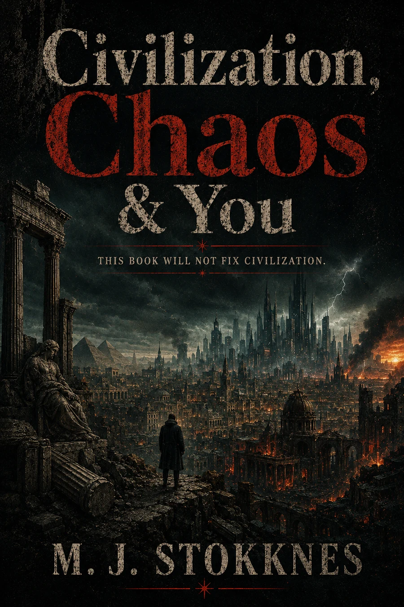
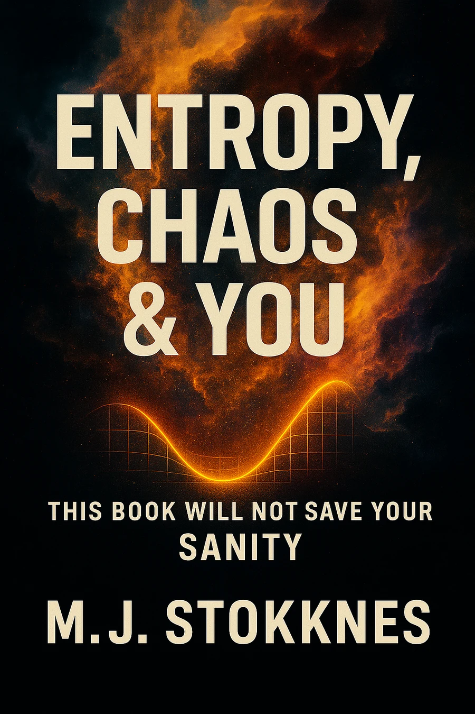
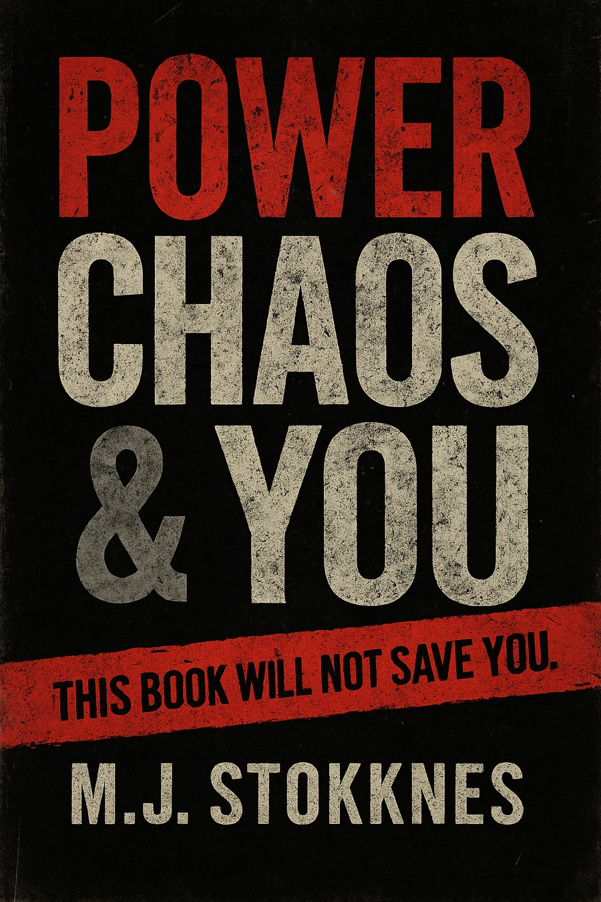
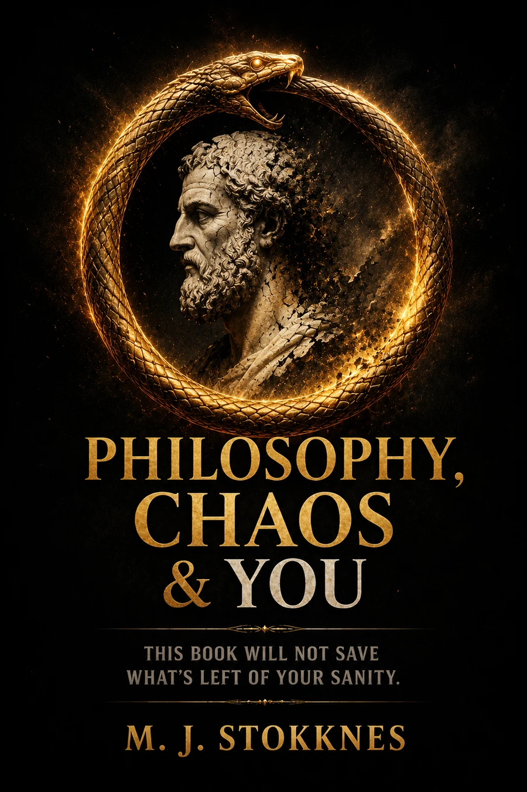
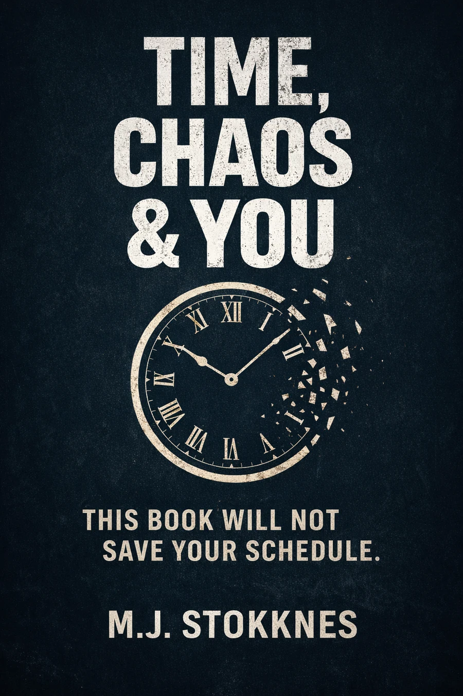
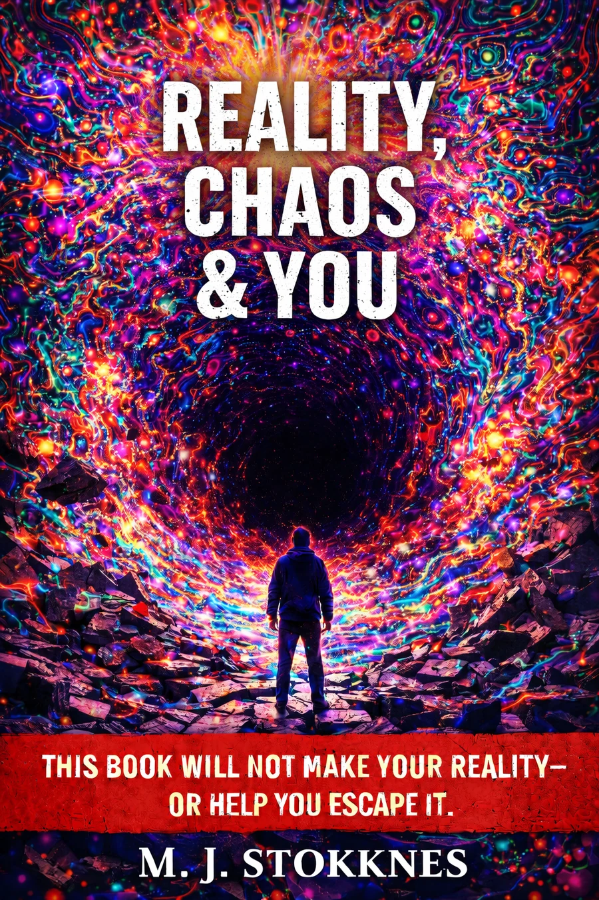

Begin with the pressure you already recognize.
There is no compulsory order. Civilization looks outward. Identity turns inward. Entropy examines maintenance. Information examines signal. Love examines co-regulation. Reality asks what remains when understanding no longer guarantees leverage.
Social: Civilization → Power → Information → Faith
Internal: Identity → Love → Reality
Maintenance: Entropy → Time → Reality
Recursive: Philosophy → Reality → Identity

Civilization, Chaos & You
A social-philosophical examination of roads, borders, bureaucracy, markets, inherited trauma, technological systems, and the frightened animal hiding beneath the infrastructure.

Entropy, Chaos & You
A philosophical examination of entropy, maintenance, decay, exhaustion, time, institutional fragility, and the cost of keeping any structure alive.
Faith, Chaos & You
A confrontation with belief, ritual, doubt, spiritual hunger, technology, metrics, and the strange altars human beings keep building after insisting they no longer worship anything.

Power, Chaos & You
An examination of invisible power, internalized obedience, algorithms, conformity, spectacle, and the structures shaping modern behaviour precisely because they no longer look like control.
Identity, Chaos & You
A psychological and philosophical examination of masks, memory, reinforcement, social performance, neurodivergence, adaptation, and the unstable materials used to assemble the self.
Information, Chaos & You
A study of overload, media saturation, attention erosion, short-form content, selective truth, algorithms, and the collapse of proportion.
Love, Chaos & You
An examination of intimacy, projection, loneliness, comparison, emotional labour, digital performance, and the moment market logic enters the heart.

Philosophy, Chaos & You
A dense philosophical examination of perception, meaning, belief, uncertainty, identity, performance, and the conceptual cages people build so chaos has somewhere to pace.

Time, Chaos & You
A philosophical study of urgency, memory, aging, productivity, rest, deadlines, and the quiet authority of the schedule.

Reality, Chaos & You
An examination of perception, interpretation, biology, trauma, addiction, cognitive limits, material conditions, and the fact that insight does not always create leverage.
The current public order
Civilization → Entropy → Faith → Power → Identity → Information → Love → Philosophy → Time → Reality
Every volume can be read independently. The order is a structural map, not an initiation ritual.